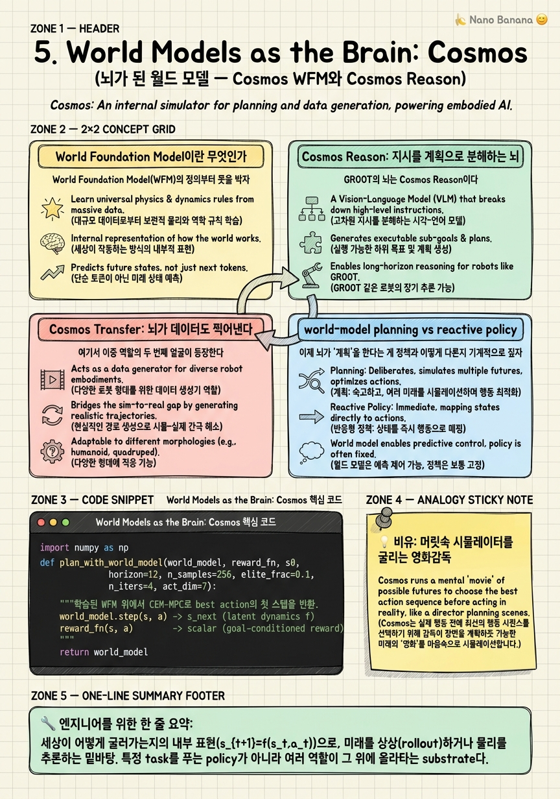

World Models as the Brain: Cosmos

🎯 학습 목표
- World Foundation Model의 정의와 로봇에서의 역할을 설명할 수 있다
- Cosmos Reason이 뇌(계획)와 데이터엔진(생성) 두 역할을 겸하는 구조를 안다
- Cosmos Transfer가 sim-to-real gap을 어떻게 좁히는지 안다
- world model 기반 planning이 reactive policy와 어떻게 다른지 안다
- Cosmos 3가 생성·추론·행동 시뮬을 통합한 의미를 안다
앞 챕터에서 GR00T N1.6을 Cosmos Reason(뇌) → VLA(정책) → whole-body RL(모터)의 3층 구조로 해부했다. 이 챕터는 그 맨 위층, 즉 '뇌'가 실제로 무엇으로 만들어졌는지를 파고든다. 답은 하나의 단어로 수렴한다 — world model. NVIDIA는 이것을 World Foundation Model(WFM)이라 부르고, 제품 이름은 Cosmos다. 핵심 주장은 단순하지만 급진적이다: 세상이 어떻게 굴러가는지에 대한 학습된 내부 표현(latent dynamics) 하나가 로봇의 계획도 담당하고, 그 로봇을 학습시킬 데이터도 찍어낸다. 뇌와 공장이 같은 모델이라는 것이다.
이 이중 역할이 이 챕터의 심장이다. Cosmos Reason은 high-level 지시를 scene understanding에 grounding된 stepwise action plan으로 분해하는 추론·계획 substrate이고(역할 A), Cosmos Transfer는 sim에서 만든 장면을 photoreal로 변환해 sim-to-real gap을 좁히는 합성데이터 생성기다(역할 B). 하나의 world model 계열이 로봇 학습의 두 병목 — '무엇을 할지 계획하기'와 '학습할 데이터 구하기' — 를 동시에 공략한다. 이것이 이 코스 전체를 관통하는 하이브리드 통합 논제의 가장 선명한 사례다.
그래서 이 챕터는 네 갈래로 나아간다. 먼저 WFM이 정확히 무엇인지(reactive policy와 대비되는 latent dynamics substrate), 다음으로 Cosmos Reason이 뇌로서 지시를 계획으로 분해하는 방식, 그다음 Cosmos Transfer가 데이터를 찍어내는 방식, 그리고 world-model 기반 planning이 reactive policy와 어떻게 다른지를 imagination rollout 코드로 만져본다. 마지막으로 COMPUTEX 2026에서 공개된 Cosmos 3가 생성·추론·행동 시뮬을 하나로 묶으면서 이 이중 역할이 어떻게 단일 모델로 수렴하는지를 본다.
핵심 내용
World Foundation Model이란 무엇인가
World Foundation Model(WFM)의 정의부터 못을 박자. WFM은 세상이 어떻게 굴러가는지에 대한 학습된 내부 표현(latent dynamics) 이다. 픽셀을 그대로 저장하는 게 아니라, 관측을 압축한 latent state \(s_t\) 위에서 '지금 이 상태에서 이 행동을 하면 다음 상태가 어떻게 될까'를 예측하는 dynamics 함수 \(s_{t+1}=f(s_t, a_t)\) 를 학습한다. 이 학습된 dynamics 위에서 모델은 미래를 상상(rollout)하거나 물리를 추론할 수 있다. 그래서 WFM은 특정 task를 푸는 policy가 아니라, 여러 task가 그 위에 올라타는 substrate다.
왜 'foundation'인가. Language foundation model이 '다음 토큰'을 예측하며 언어의 구조를 내재화하듯, WFM은 '다음 관측(또는 latent)'을 예측하며 물리 세계의 구조를 내재화한다. 결과적으로 하나의 모델이 새로운 장면, 새로운 물체, 새로운 embodiment에 대해서도 '그다음에 뭐가 일어날지'를 그럴듯하게 상상한다. 이 상상 능력이 planning과 data generation 두 곳 모두의 밑천이다.
WFM의 계보는 Dreamer/RSSM(Recurrent State-Space Model)로 거슬러 올라간다. Dreamer는 encoder로 관측을 latent로 압축하고, latent 공간 안에서 상상만으로 policy를 학습했다(behavior learning in imagination). 즉 실제 환경과 상호작용하지 않고 '머릿속 시뮬레이터' 안에서 수천 번 rollout하며 배운다. Cosmos는 이 아이디어를 video 규모의 대형 generative model로 밀어올린 것으로 이해하면 된다 — RSSM이 소형 latent였다면, Cosmos는 photoreal video까지 상상하는 대형 WFM이다.
중요한 구분: WFM 자체는 '무엇을 할지'를 직접 출력하지 않는다. WFM은 '이렇게 하면 이렇게 된다'는 예측 엔진일 뿐이다. 그 예측을 소비해 계획을 세우는 층(Cosmos Reason, planner)과, 그 예측으로 장면을 렌더링해 데이터를 만드는 층(Cosmos Transfer)이 그 위에 붙는다. 이 분리를 잡고 있어야 다음 두 섹션의 이중 역할이 자연스럽게 읽힌다.
Cosmos Reason: 지시를 계획으로 분해하는 뇌
GR00T의 뇌는 Cosmos Reason이다. NVIDIA는 이 역할을 다음과 같이 명시한다.
The model uses world models, such as NVIDIA Cosmos Reason, to decompose high-level instructions into stepwise action plans grounded in scene understanding to perform real-world tasks.
풀이하면: GR00T는 Cosmos Reason 같은 world model을 사용해 high-level 지시를 scene understanding에 grounding된 stepwise action plan으로 분해하여 실제 task를 수행한다. 세 개의 키워드가 이 문장의 무게중심이다 — decompose(분해), stepwise action plan(단계별 행동 계획), grounded in scene understanding(장면 이해에 접지).
'커피를 가져와'라는 지시를 생각해 보자. 이건 하나의 motor command로 환원되지 않는다. Cosmos Reason은 이걸 '주방으로 이동 → 컵을 찾음 → 컵을 집음 → 커피머신으로 이동 → 버튼 누름 → 사용자에게 복귀' 같은 단계열로 쪼갠다. 결정적으로, 이 분해는 진공에서 일어나지 않는다. 현재 장면 이해(컵이 어디 있는지, 통로가 막혔는지, 손이 비었는지)에 grounding되어 있다. 그래서 같은 지시라도 장면이 다르면 다른 계획이 나온다. 이것이 reactive policy와의 첫 번째 근본 차이다 — reactive policy는 '현재 관측 → 즉시 행동'이라 지시를 단계로 나누지 못한다.
왜 뇌가 하필 world model이어야 하는가. 계획을 세운다는 건 곧 '이 단계를 하면 세상이 어떻게 바뀔지'를 내다보는 일이기 때문이다. '컵을 먼저 집어야 커피머신 앞에서 담을 수 있다'는 순서 제약은 dynamics에 대한 이해에서 나온다. 즉 stepwise plan을 만들려면 각 step의 결과를 예측하는 능력, 바로 WFM의 latent dynamics가 필요하다. 뇌가 world model인 이유는 계획 자체가 미래 예측 문제이기 때문이다.
NVIDIA 로드맵에서 이 뇌는 Cosmos Reason 2로 발전한다. 추론 깊이, 장기 계획, multi-step task에서의 일관성이 강화되는 방향이다. 하지만 아키텍처상의 역할은 동일하다 — 3층 구조의 최상위에서, 아래의 VLA policy와 whole-body RL controller가 실행할 stepwise plan을 공급하는 계획자. 뇌는 '무엇을 어떤 순서로'를 정하고, 아래층은 '그것을 어떻게 몸으로'를 담당한다.
Cosmos Transfer: 뇌가 데이터도 찍어낸다
여기서 이중 역할의 두 번째 얼굴이 등장한다. 같은 Cosmos 계열이 이번엔 데이터 공장으로 변신한다 — Cosmos Transfer다.
Cosmos Transfer의 임무는 합성데이터 생성/증강, 구체적으로는 sim→photoreal 도메인 전이다. Isaac Sim에서 만든 장면은 물리적으로는 정확하지만 렌더링이 게임 그래픽처럼 '합성 티'가 난다. 이 rendering gap이 바로 sim-to-real gap의 큰 축이다 — sim에서 완벽히 학습한 정책이 실제 카메라 영상 앞에서 무너지는 이유. Cosmos Transfer는 이 합성 장면을 photoreal하게 변환해, 시뮬레이터가 뽑아낸 무한한 장면을 '실사처럼 보이는' 학습 데이터로 바꾼다.
작동 방식의 직관: Isaac Sim이 장면의 구조(물체 배치, 로봇 자세, depth, segmentation 같은 ground-truth label)를 제공하면, Cosmos Transfer는 그 구조를 보존한 채 겉모습만 photoreal로 갈아끼운다. label은 시뮬레이터가 이미 정확히 알고 있으므로 공짜로 따라온다. 결과는 '정확한 정답이 붙은 실사급 데이터'의 대량 생산이다. domain randomization(조명·질감·배경을 무작위로 흔들기)과 결합하면 하나의 sim 장면에서 수많은 photoreal 변형이 쏟아진다.
왜 이게 '뇌가 데이터를 찍어낸다'인가. Cosmos Transfer가 photoreal 장면을 생성할 수 있는 이유는 그 밑에 세상이 어떻게 보이고 굴러가는지에 대한 world model 표현이 깔려 있기 때문이다. 계획을 세우는 데 쓰는 바로 그 '세상에 대한 이해'가, 방향만 바꾸면 그럴듯한 세상을 렌더링하는 능력이 된다. 예측(추론)과 생성은 같은 dynamics의 앞면과 뒷면이다.
이 지점에서 이중 역할의 전략적 무게를 짚자. 로봇 학습에는 두 개의 악명 높은 병목이 있다 — (1) 무엇을 할지 계획하기, (2) 학습할 데이터 구하기. 전통적으로 이 둘은 완전히 다른 팀, 다른 시스템의 문제였다. Cosmos의 논제는 하나의 world model이 두 병목을 동시에 공략한다는 것이다. Cosmos Reason이 (1)을, Cosmos Transfer가 (2)를 맡되, 둘은 같은 WFM substrate를 공유한다. 이것이 이 코스가 말하는 하이브리드 통합의 가장 응축된 형태다.
world-model planning vs reactive policy
이제 뇌가 '계획'을 한다는 게 정책과 어떻게 다른지 기계적으로 짚자. 두 패러다임을 나란히 놓으면 차이가 선명하다.
| 구분 | reactive policy | world-model planning |
|---|---|---|
| 동작 | 현재 관측 → 즉시 행동 | 미래를 latent로 rollout → 계획 선택 |
| 함수 형태 | \(a_t = \pi(o_t)\) | \(s_{t+1}=f(s_t,a_t)\) 로 여러 미래를 상상 후 best 선택 |
| 앞을 내다봄 | 없음 (한 스텝) | 있음 (horizon \(H\) 스텝) |
| 새 목표 대응 | 재학습 필요 경향 | 같은 dynamics 위에서 목표만 바꿔 재계획 |
| 계산 비용 | 싸다 (1회 forward) | 비싸다 (다수 rollout) |
| 실패 모드 | 근시안적, 함정에 빠짐 | 상상이 부정확하면 계획도 틀림 |
reactive policy는 반사신경이다. 현재 관측 \(o_t\) 를 넣으면 행동 \(a_t=\pi(o_t)\) 가 즉시 튀어나온다. 빠르고 안정적이지만 앞을 못 본다 — 지금 좋아 보이는 행동이 세 스텝 뒤에 막다른 길이어도 알 수 없다.
world-model planning은 수읽기다. latent state \(s_t\) 에서 시작해 dynamics \(s_{t+1}=f(s_t,a_t)\) 로 여러 개의 후보 action sequence를 머릿속에서 끝까지(horizon \(H\)) 굴려본다. 각 상상된 궤적에 reward를 매기고, 가장 높은 궤적의 첫 행동만 실제로 실행한 뒤, 다음 스텝에서 다시 상상한다. 이것이 MPC(Model Predictive Control)의 골격이고, 후보 sequence를 확률적으로 뽑아 상위만 남겨 반복 개선하면 CEM(Cross-Entropy Method)이 된다. Dreamer가 '상상 속에서 policy를 학습'했다면, planning은 '상상 속에서 매 순간 계획을 다시 짠다'.
결정적 트레이드오프는 계산 비용과 상상 품질이다. planning은 매 스텝 수십~수백 개의 rollout을 요구해 느리다. 그리고 dynamics \(f\) 가 부정확하면 상상한 미래가 틀리고, 틀린 미래 위에서 세운 계획도 틀린다(compounding error). 그래서 실무의 GR00T식 계층 구조가 영리하다 — Cosmos Reason이 느리지만 앞을 내다보는 high-level planning을 담당하고, 아래층의 VLA policy와 whole-body RL controller가 빠른 reactive 실행을 담당한다. planning은 위에서 드물게, reaction은 아래에서 촘촘하게. 이 둘을 하나로 섞으려 하지 않고 층으로 나눈 것이 하이브리드 통합의 실용적 핵심이다.
Cosmos 3: 생성·추론·시뮬의 통합
COMPUTEX 2026에서 NVIDIA는 Cosmos 3를 공개하며 이 이중 역할이 어디로 수렴하는지를 못 박았다.
the first world foundation model to unify synthetic world generation, physical AI reasoning and action simulation.
풀이: 합성 세계 생성(synthetic world generation), 물리 AI 추론(physical AI reasoning), 그리고 행동 시뮬레이션(action simulation)을 하나로 통합한 최초의 world foundation model. 이 세 가지가 정확히 우리가 앞에서 따로 본 조각들이다 — 생성은 Cosmos Transfer의 데이터 공장, 추론은 Cosmos Reason의 뇌, 그리고 행동 시뮬은 '이 행동을 하면 세상이 어떻게 될지'를 굴려보는 rollout 능력이다.
핵심 메시지는 '통합'이다. 지금까지 Reason(추론)과 Transfer(생성)를 별개 제품처럼 이야기했지만, Cosmos 3의 논제는 이들이 실은 하나의 WFM이 가진 서로 다른 출력 모드라는 것이다. 같은 latent dynamics를 (1) 계획을 위해 질의하면 reasoning, (2) 데이터를 위해 렌더링하면 generation, (3) 정책을 평가하려 굴리면 action simulation이 된다. 이중 역할이 사실은 삼중 역할의 단일 substrate로 수렴한 셈이다.
이 통합이 왜 큰 사건인가. action simulation이 같은 모델 안에 들어오면, 데이터를 만드는 world와 정책이 실행되는 world와 계획이 상상되는 world가 물리적으로 일관된다. 예전에는 Isaac Sim(시뮬레이터), Cosmos Transfer(생성), Cosmos Reason(추론)이 각자의 world 가정을 갖는 별도 시스템이라 그 사이에서 gap이 샜다. 세 가지를 하나의 WFM으로 묶으면 '학습에 쓴 세계'와 '계획에 쓴 세계'와 '평가에 쓴 세계'가 같은 dynamics를 공유한다. 이는 sim-to-real gap을 근본에서 줄이는 방향이다.
이 챕터의 결론으로 돌아오자. 뇌(계획)와 공장(데이터)이 같은 world model이라는 명제는 Cosmos Reason과 Cosmos Transfer라는 두 얼굴에서 출발해, Cosmos 3에서 생성·추론·시뮬의 단일 substrate로 완성된다. 하나의 world model이 로봇 학습의 두(혹은 세) 병목을 동시에 먹는다 — 이것이 GR00T의 상단 층을 떠받치는 가장 큰 베팅이다.
💡 비유로 이해하기
Cosmos의 이중 역할을 이해하는 가장 좋은 그림은 한 명의 영화감독이다. 이 감독은 머릿속에 세상이 어떻게 굴러가는지에 대한 완전한 모델 — 사람이 어떻게 움직이고, 물건이 어떻게 떨어지고, 빛이 어떻게 비치는지 — 을 갖고 있다. 이 내부 모델이 바로 world model이다.
감독이 이 모델을 앞을 내다보는 데 쓰면 뇌(Cosmos Reason)가 된다. '이 배우가 저 문으로 들어가서 컵을 집고 돌아 나오려면, 카메라를 어디 두고 어떤 순서로 찍어야 하지?' 하고 머릿속에서 장면을 여러 버전으로 굴려본 뒤 가장 나은 순서를 고른다. 이것이 stepwise plan의 분해이자 world-model planning이다. 체스 기사가 수를 두기 전에 몇 수 앞을 읽는 것과 같다 — 현재 판만 보고 반사적으로 두는 게 아니라(\(a=\pi(o)\)), 미래를 \(s_{t+1}=f(s_t,a_t)\) 로 상상해 best line을 고른다.
감독이 같은 모델을 세트를 짓는 데 쓰면 데이터 공장(Cosmos Transfer)이 된다. 촬영할 실제 로케이션이 부족하니, 머릿속 세계 모델로 photoreal한 세트를 무한히 지어낸다. 조명을 바꾸고 배경을 갈고 배우 위치를 흔들어(domain randomization) 같은 장면의 수천 가지 버전을 찍어낸다. 게다가 감독은 각 세트의 '정답'(무엇이 어디 있는지)을 처음부터 알고 있으니 label이 공짜로 따라온다.
결정적 통찰: 앞을 내다보는 능력과 세트를 짓는 능력은 같은 머릿속 세계 모델에서 나온다. 세상이 어떻게 굴러가는지 알아야 미래도 상상하고 그럴듯한 세트도 지을 수 있다. 그래서 하나의 감독(하나의 WFM)이 '무엇을 찍을지 계획'과 '어디서 찍을지 세트 제작'이라는 두 병목을 동시에 해결한다. Cosmos 3에 이르면 이 감독은 계획하고, 세트를 짓고, 심지어 배우의 연기(action simulation)까지 같은 머릿속에서 리허설한다 — 세 작업이 하나의 상상력 위에서 일관되게 돌아간다.
💻 코드 예시
world-model planning의 골격을 CEM(Cross-Entropy Method) 스타일 MPC로 스케치한다. 핵심 아이디어: 학습된 dynamics \(s_{t+1}=f(s_t,a_t)\) 위에서 여러 action sequence를 latent 공간에서 rollout(상상)하고, reward가 높은 상위 궤적으로 행동 분포를 좁혀가며, 최종적으로 best plan의 첫 행동만 실행한다. Cosmos가 실제로 하는 일의 개념적 축소판이다 — reactive policy \(a=\pi(o)\) 와의 차이가 여기서 코드로 드러난다.
import numpy as np
def plan_with_world_model(world_model, reward_fn, s0,
horizon=12, n_samples=256, elite_frac=0.1,
n_iters=4, act_dim=7):
"""학습된 WFM 위에서 CEM-MPC로 best action의 첫 스텝을 반환.
world_model.step(s, a) -> s_next (latent dynamics f)
reward_fn(s, a) -> scalar (goal-conditioned reward)
"""
n_elite = max(1, int(n_samples * elite_frac))
# 행동 시퀀스 분포를 Gaussian으로 초기화 (mean 0, std 1)
mean = np.zeros((horizon, act_dim))
std = np.ones((horizon, act_dim))
for _ in range(n_iters):
# 1) 여러 후보 action sequence를 샘플링
seqs = mean[None] + std[None] * np.random.randn(
n_samples, horizon, act_dim)
seqs = np.clip(seqs, -1.0, 1.0)
# 2) 각 후보를 latent dynamics로 '상상' rollout하고 reward 누적
returns = np.zeros(n_samples)
for i in range(n_samples):
s = s0
total = 0.0
for t in range(horizon):
a = seqs[i, t]
total += reward_fn(s, a) # 상상 속 보상
s = world_model.step(s, a) # s_{t+1} = f(s_t, a_t)
returns[i] = total
# 3) reward 상위 elite 궤적만 남겨 분포를 그쪽으로 좁힘
elite_idx = np.argsort(returns)[-n_elite:]
elite = seqs[elite_idx]
mean = elite.mean(axis=0)
std = elite.std(axis=0) + 1e-6
# 4) 최종 계획의 '첫 행동'만 실행 (다음 스텝에서 다시 계획)
return mean[0]
# reactive policy와의 대비:
# reactive: a = policy(obs) # 앞을 안 봄, 1회 forward
# world-model: a = plan_with_world_model(f) # H 스텝을 상상 후 선택이 스케치의 뼈대가 곧 world-model planning의 정의다. world_model.step이 학습된 dynamics \(s_{t+1}=f(s_t,a_t)\) 이고, 우리는 실제 로봇을 움직이지 않고 latent 공간 안에서만 horizon 스텝을 굴린다 — 이것이 '상상(imagination) rollout'이다. (2)에서 각 후보 궤적의 reward를 누적하고, (3)에서 상위 elite만 남겨 다음 iteration의 샘플링 분포를 그쪽으로 좁히는 게 CEM의 핵심이다. n_iters번 반복하며 좋은 행동 분포로 수렴한다. 결정적 부분은 (4) — 12스텝짜리 계획을 다 세워놓고도 첫 행동만 실행하고, 다음 관측에서 처음부터 다시 계획한다(receding horizon). 이것이 MPC가 상상의 오차(compounding error)를 매 스텝 새 관측으로 교정하는 방식이다. 맨 아래 주석이 이 챕터의 대비를 압축한다: reactive는 a=policy(obs) 한 줄로 근시안적이고 싸며, world-model planning은 \(H\) 스텝을 내다보는 대신 매 스텝 수백 번의 rollout이라는 값을 치른다. GR00T가 이 값비싼 planning을 Cosmos Reason(뇌)에만 두고 아래층을 reactive하게 둔 이유가 여기서 코드 수준으로 납득된다.
🏭 현업에서의 평가
✅ 시니어가 보는 것
- World model을 latent dynamics(s_{t+1}=f(s_t,a_t)) substrate로 정의하고, task-specific policy와 구분
- world-model planning(미래 rollout 후 선택)과 reactive policy(관측 즉시 행동)의 트레이드오프를 정량적으로 대비
- Cosmos Reason(계획)과 Cosmos Transfer(데이터 생성)가 같은 WFM의 두 얼굴임을 이해
- sim-to-real gap을 rendering gap과 physics gap으로 분해하고, Cosmos Transfer/domain randomization의 역할을 설명
- planning의 compounding error와 계산 비용을 인지하고, 계층 분리(느린 planning 위 + 빠른 reaction 아래)로 완화하는 설계를 논증
⚠️ 레드 플래그
- World model을 그냥 'video 생성 모델'로만 이해하고 planning substrate 역할을 놓침
- planning과 policy를 같은 것으로 뭉뚱그려 reactive vs deliberative 차이를 설명 못 함
- 합성데이터를 '무한 공짜 데이터'로만 보고 rendering/physics gap과 label 정확성 이슈를 모름
- dynamics가 부정확할 때 상상 위 계획이 무너지는 compounding error를 고려 안 함
- MPC/CEM 없이 'world model이 알아서 행동을 낸다'는 식으로 planning 메커니즘을 얼버무림
🎤 예상 인터뷰 질문
- World model 기반 planning과 end-to-end reactive policy의 차이를 함수 형태와 계산 비용, 실패 모드 관점에서 대비하라. GR00T는 왜 둘을 층으로 나눴는가?
- Cosmos Reason과 Cosmos Transfer가 '같은 world model의 두 역할'이라는 주장을 latent dynamics 관점에서 정당화하라. 예측과 생성이 왜 같은 능력의 앞뒷면인가?
- sim에서 완벽히 학습한 정책이 실제 카메라 앞에서 무너진다. 원인을 rendering gap과 physics gap으로 분해하고, Cosmos Transfer가 어느 쪽을 어떻게 공략하는지, 남는 gap은 무엇인지 답하라.
- CEM-MPC로 world-model planning을 구현할 때 horizon과 sample 수를 늘리면 무엇이 좋아지고 무엇이 나빠지는가? dynamics 오차가 클 때 horizon을 어떻게 조정할 것인가?
✨ 핵심 요약
WFM은 학습된 latent dynamics substrate다
세상이 어떻게 굴러가는지의 내부 표현(s_{t+1}=f(s_t,a_t))으로, 미래를 상상(rollout)하거나 물리를 추론하는 밑바탕. 특정 task를 푸는 policy가 아니라 여러 역할이 그 위에 올라타는 substrate다.
Cosmos Reason = GR00T의 뇌
high-level 지시를 scene understanding에 grounding된 stepwise action plan으로 분해한다. 계획이 곧 미래 예측 문제이기 때문에 뇌가 하필 world model이어야 한다. Cosmos Reason 2로 발전 중.
Cosmos Transfer = 뇌가 찍어내는 데이터 공장
sim→photoreal 도메인 전이로 rendering gap을 좁혀 sim-to-real gap을 줄인다. 시뮬레이터가 구조와 label을 주면 겉모습만 실사로 갈아끼워, 정답이 붙은 실사급 데이터를 대량 생산한다. Isaac Sim과 결합.
하나의 world model이 두 병목을 동시에 공략한다
Cosmos는 (A) 추론·계획 substrate이자 (B) 합성데이터 생성기 — '무엇을 할지 계획'과 '학습할 데이터 구하기'라는 로봇 학습의 두 병목을 같은 WFM으로 먹는다. 이 코스 하이브리드 통합 논제의 가장 응축된 사례.
planning vs reactive는 앞을 내다보느냐의 차이
reactive policy는 관측 즉시 행동(a=policy(obs))으로 싸고 근시안적. world-model planning은 여러 미래를 latent로 rollout한 뒤 best를 선택(MPC/CEM)해 앞을 내다보지만 계산이 비싸고 dynamics 오차에 취약하다.
GR00T는 planning과 reaction을 층으로 나눴다
값비싼 앞내다보기(Cosmos Reason)는 상단에 드물게, 빠른 실행(VLA policy + whole-body RL)은 하단에 촘촘하게. 둘을 하나로 섞지 않고 분리한 것이 하이브리드 통합의 실용적 핵심.
예측과 생성은 같은 dynamics의 앞뒷면
세상이 어떻게 굴러가는지 아는 능력이 방향만 바꾸면 미래 예측(추론)도 되고 그럴듯한 장면 렌더링(생성)도 된다. 그래서 계획하는 뇌와 데이터를 찍는 공장이 같은 world model일 수 있다.
Cosmos 3는 생성·추론·시뮬을 하나로 통합한다
COMPUTEX 2026 공개, synthetic world generation·physical AI reasoning·action simulation을 통합한 최초의 WFM. 이중 역할이 단일 substrate로 수렴하며, 학습·계획·평가가 같은 dynamics를 공유해 sim-to-real gap을 근본에서 줄이는 방향이다.